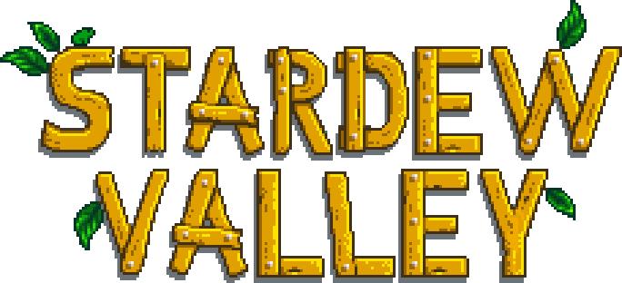

-"Desde então, tudo na minha vida mudou. Como assim morar em uma fazenda? Que lugar é esse e quem são essas pessoas? Lewis, Robin...? Vila Pelicanos? Vale do Orvalho? Quando tudo mudou tão de repente? Bom, só sei que não quero voltar para aquela angústia da cidade, então é melhor eu começar a me acostumar. Não sei o que me aguarda, mas sei que estarei pronto."
Stardew Valley é um ótimo jogo para quem gosta de jogos casuais, mais tranquilos, sem competitividade. Jogar sozinha(o) é super divertido, você tem todo um mapa para explorar, cavernas para enfrentar, pessoas (NPCs) para conhecer e conviver, itens para criar, estruturas para aprimorar, animais para cuidar... São inúmeras oportunidades de ocupação e/ou diversão. O jogo em si não exige nada de você, ou seja, jogue de sua maneira, como quiser, no seu tempo, sem estresse ou aflição por conquistar algo. Mas se estiver cansada(o) de jogar a sós ou quiser alguma companhia, Stardew Valley possui o modo multijogador, permitindo até 4 pessoas jogarem simultaneamente em um mesmo mapa, com suas próprias casas e personagens. O jogo seguirá normalmente, com a mesma história e as mesmas funcionalidades, mas agora em conjunto! (:D yey)
Disponível nas plataformas Steam, Humble Store, XboxOne, PlayStation 4, Nintendo Switch, Gog.com e nos sistemas operacionais Android e IOS.